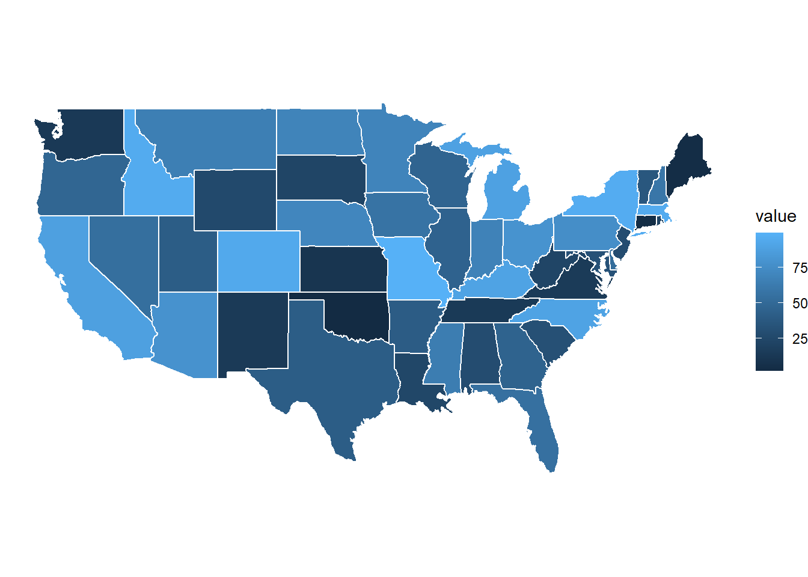
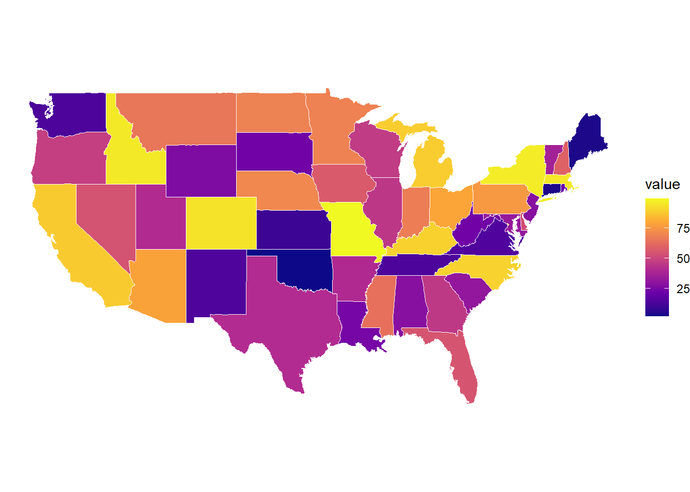

You instantly see: - clusters - outliers - regional patterns
Introduction to Maps
We already learned:
Vector data → shapes (states, counties)
Raster data → continuous surfaces
Color → preattentive attention
Gestalt → grouping patterns
Maps combine ALL of these ideas!
We are not just drawing shapes, we are attaching meaning to space.
Before coding: what are we building?
We need two things:
Geometry (where things are)
Data (what we want to show)
Then we combine them.
What makes NYT maps so powerful?
NYT maps are powerful because they:
Show clear geographic patterns
Use simple color scales
Remove visual clutter
Focus attention on one variable
Small Example Maps Code (Loading Data)
library(tidyverse)
Warning: package 'tidyverse' was built under R version 4.5.1
Warning: package 'ggplot2' was built under R version 4.5.1
Warning: package 'tibble' was built under R version 4.5.1
Warning: package 'tidyr' was built under R version 4.5.1
Warning: package 'readr' was built under R version 4.5.1
Warning: package 'purrr' was built under R version 4.5.1
Warning: package 'dplyr' was built under R version 4.5.1
Warning: package 'stringr' was built under R version 4.5.1
Warning: package 'forcats' was built under R version 4.5.1
Warning: package 'lubridate' was built under R version 4.5.1
── Attaching core tidyverse packages ──────────────────────── tidyverse 2.0.0 ──
✔ dplyr 1.1.4 ✔ readr 2.1.5
✔ forcats 1.0.1 ✔ stringr 1.5.2
✔ ggplot2 4.0.0 ✔ tibble 3.3.0
✔ lubridate 1.9.4 ✔ tidyr 1.3.1
✔ purrr 1.1.0
── Conflicts ────────────────────────────────────────── tidyverse_conflicts() ──
✖ dplyr::filter() masks stats::filter()
✖ dplyr::lag() masks stats::lag()
ℹ Use the conflicted package (<http://conflicted.r-lib.org/>) to force all conflicts to become errors
library(maps)
Warning: package 'maps' was built under R version 4.5.2
Attaching package: 'maps'
The following object is masked from 'package:purrr':
map
library(viridis)
Warning: package 'viridis' was built under R version 4.5.3
Loading required package: viridisLite
Warning: package 'viridisLite' was built under R version 4.5.1
Attaching package: 'viridis'
The following object is masked from 'package:maps':
unemp
us_states <-map_data("state")#Think: an empty coloring book.head(us_states)
long lat group order region subregion
1 -87.46201 30.38968 1 1 alabama <NA>
2 -87.48493 30.37249 1 2 alabama <NA>
3 -87.52503 30.37249 1 3 alabama <NA>
4 -87.53076 30.33239 1 4 alabama <NA>
5 -87.57087 30.32665 1 5 alabama <NA>
6 -87.58806 30.32665 1 6 alabama <NA>
Create Data for Map
set.seed(123)state_values <-tibble(region =unique(us_states$region),value =runif(length(unique(us_states$region)), 0, 100))#Now every shape has a value attached.map_df <-left_join(us_states, state_values, by ="region")# We created fake data (incomes or rates)# Then we JOIN it to map geometry
First Map (Basic)
ggplot(map_df, aes(long, lat, group = group, fill = value)) +geom_polygon(color ="white") +#draws statescoord_fixed(1.3) +theme_void()

Make it NYT-style (Basic)
ggplot(map_df, aes(long, lat, group = group, fill = value)) +geom_polygon(color ="white", linewidth =0.2) +coord_fixed(1.3) +scale_fill_viridis_c(option ="C") +theme_void()

Introduction to Plotly
Plotly is a package that turns static plots into:
interactive plots you can hover, zoom, and explore instead of just looking at a picture, you can interact with the data
Why do we use it? Traditional plots (ggplot2):
static image
no interaction
Plotly:
hover over points
zoom in/out
click and explore
Example
library(plotly)
Warning: package 'plotly' was built under R version 4.5.3
Attaching package: 'plotly'
The following object is masked from 'package:ggplot2':
last_plot
The following object is masked from 'package:stats':
filter
The following object is masked from 'package:graphics':
layout
library(ggplot2)#Do heavier cars use more gas?p <-ggplot(mtcars, aes(x = wt, y = mpg)) +geom_point()ggplotly(p)